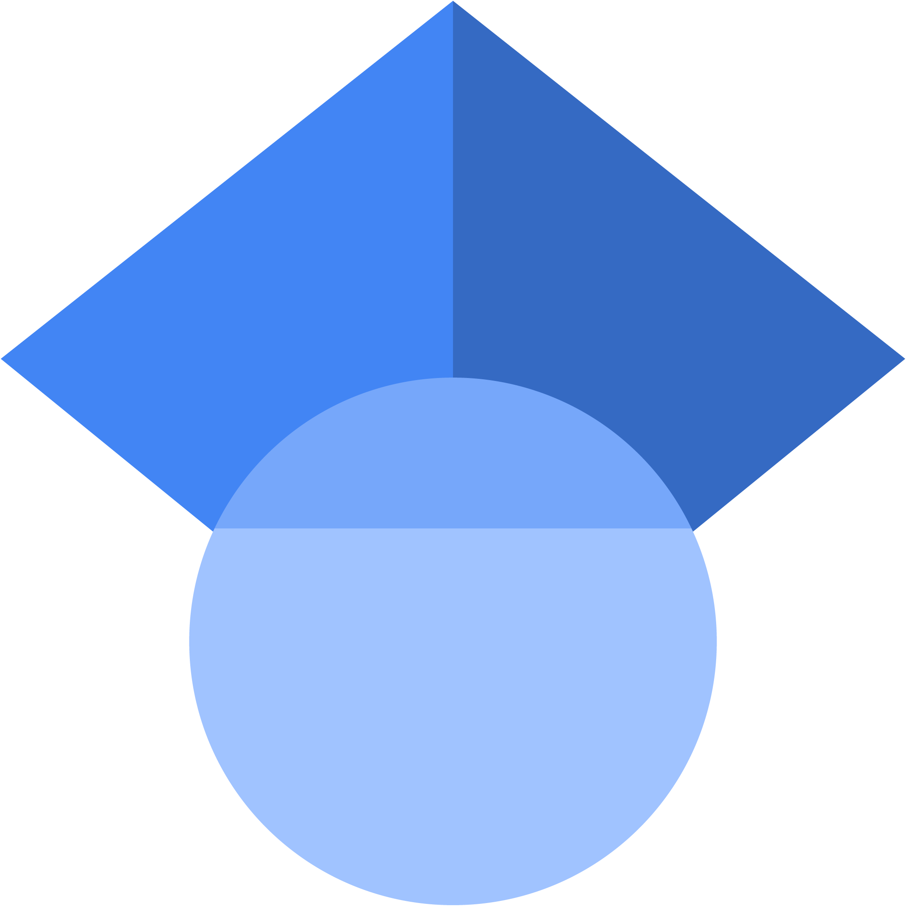

<!DOCTYPE html>
<html lang="fr">
<head>
    <meta charset="UTF-8">
    <meta name="viewport" content="width=device-width, initial-scale=1.0">
    <title>Dr. Yann BERTHO - Université Paris-Saclay</title>
    <style>
        :root {
            --bg-body: #f9f9f9;
            --bg-header: white;
            --bg-section: white;
            --text-primary: #333;
            --text-secondary: #555;
            --text-link: #0056b3;
            --shadow: rgba(0, 0, 0, 0.1);
            --hover-bg: #e8f4fc;
        }

        @media (prefers-color-scheme: dark) {
            :root {
                --bg-body: #1a1a1a;
                --bg-header: #252525;
                --bg-section: #2d2d2d;
                --text-primary: #e0e0e0;
                --text-secondary: #aaaaaa;
                --text-link: #4dabf7;
                --shadow: rgba(0, 0, 0, 0.3);
                --hover-bg: #3a3a3a;
            }
        }

        body {
            font-family: 'Segoe UI', Tahoma, Geneva, Verdana, sans-serif;
            font-size: 16px;
            line-height: 1.5;
            margin: 0;
            padding: 0;
            color: var(--text-primary);
            background-color: var(--bg-body);
            transition: background-color 0.3s, color 0.3s;
        }

        .container {
            max-width: 1000px;
            margin: 0 auto;
            padding: 20px;
        }

        header {
            display: flex;
            flex-wrap: wrap;
            gap: 20px;
            margin-bottom: 30px;
            padding: 20px;
            background-color: var(--bg-header);
            border-radius: 5px;
            box-shadow: 0 2px 5px var(--shadow);
            transition: background-color 0.3s, box-shadow 0.3s;
        }

        .photo {
            flex: 0 0 auto;
            border-radius: 5px;
            overflow: hidden;
        }

        .photo img {
            display: block;
            max-width: 100%;
            height: auto;
        }

        .infos {
            flex: 1;
            min-width: 300px;
            display: flex;
            flex-direction: column;
            justify-content: flex-start;
            padding-left: 20px;
            position: relative;
        }

        .infos h1 {
            font-size: 1.4rem;
            margin: 0 0 0.2rem 0;
            color: var(--text-primary);
            line-height: 1.2;
            display: flex;
            align-items: center;
            justify-content: space-between;
        }

        .nom-bertho {
            font-variant-small-caps: small-caps;
        }

        .infos a {
            color: var(--text-link);
            text-decoration: none;
            font-weight: bold;
            margin: 0 0 0.8rem 0;
            display: inline-block;
            transition: color 0.3s;
        }

        .infos a:hover {
            text-decoration: underline;
        }

        .info-block {
            margin-bottom: 1.2rem;
        }

        .info-block h2 {
            font-size: 1rem;
            margin: 0 0 0.3rem 0;
            color: var(--text-primary);
            font-weight: bold;
        }

        .info-block p {
            margin: 0.1rem 0;
            line-height: 1.4;
            color: var(--text-secondary);
        }

        .textfootnote {
            font-size: 0.9rem;
            color: var(--text-secondary);
            margin: 0.1rem 0;
        }

        .sections {
            display: flex;
            flex-direction: column;
            gap: 15px;
        }

        .section-link {
            display: block;
            padding: 15px 20px;
            background-color: var(--bg-section);
            border-radius: 5px;
            text-decoration: none;
            color: var(--text-primary);
            font-weight: bold;
            font-size: 1.1rem;
            transition: all 0.3s;
            box-shadow: 0 2px 5px var(--shadow);
        }

        .section-link:hover {
            background-color: var(--hover-bg);
            transform: translateY(-2px);
        }

        /* Icône drapeau */
        .lang-switch img {
            width: 32px;
            height: auto;
            margin-left: 10px;
            cursor: pointer;
            transition: transform 0.2s;
        }

        .lang-switch img:hover {
            transform: scale(1.1);
        }

        /* Pied de page */
        footer {
            margin-top: 40px;
            padding: 15px 0;
            border-top: 1px solid var(--text-secondary);
            display: flex;
            align-items: center;
            justify-content: center;
            gap: 18px;
            flex-wrap: wrap;
            opacity: 0.9;
        }

        /* Groupes pour institutionnels / personnels */
        .institutions, .personals {
            display: flex;
            align-items: flex-start;
            gap: 14px;
        }

        /* Délimiteur vertical */
        .footer-separator {
            width: 1px;
            height: 28px;
            background-color: var(--text-secondary);
            margin: 0 12px;
            opacity: 0.6;
        }

        /* Icônes + texte */
        .footer-item {
            display: flex;
            flex-direction: column;
            align-items: center;
            text-align: center;
            font-size: 0.8rem;
            color: var(--text-secondary);
        }

        .footer-logo {
            height: 28px;      /* hauteur desktop */
            width: auto;
            display: block;
            object-fit: contain;
            transition: transform 0.18s, opacity 0.25s;
        }

        footer a {
            display: inline-flex;
            flex-direction: column;
            align-items: center;
            text-decoration: none;
            gap: 4px;
        }

        footer a:hover .footer-logo {
            transform: scale(1.06);
            opacity: 1;
        }

        @media (max-width: 768px) {
            body {
                font-size: 15px;
            }
            header {
                flex-direction: column;
                align-items: flex-start;
            }
            .photo {
                width: 100%;
                margin-bottom: 15px;
            }
            .infos {
                padding-left: 0;
                width: 100%;
            }
            .infos h1 {
                font-size: 1.2rem;
            }
            .info-block h2 {
                font-size: 0.95rem;
            }
            .section-link {
                font-size: 1rem;
                padding: 12px 15px;
            }
            footer {
                gap: 12px;
            }
            .footer-logo {
                height: 24px;  /* hauteur mobile */
            }
            .footer-separator {
                height: 20px;
            }
        }
    </style>
</head>
<body>
    <div class="container">
        <!-- ... contenu inchangé ... -->

        <!-- Pied de page avec logos -->
        <footer>
            <!-- Institutionnels -->
            <div class="institutions" aria-label="Logos institutionnels">
                <a href="https://www.fast.u-psud.fr" target="_blank" rel="noopener noreferrer" title="Laboratoire FAST" class="footer-item">
                    <picture>
                        <source srcset="images/logo_FAST-dark.png" media="(prefers-color-scheme: dark)">
                        <source srcset="images/logo_FAST-light.png" media="(prefers-color-scheme: light)">
                        
                    </picture>
                    <span>Lab. FAST</span>
                </a>

                <a href="https://www.universite-paris-saclay.fr" target="_blank" rel="noopener noreferrer" title="Université Paris-Saclay" class="footer-item">
                    <picture>
                        <source srcset="images/logo_upsay-dark.png" media="(prefers-color-scheme: dark)">
                        <source srcset="images/logo_upsay-light.png" media="(prefers-color-scheme: light)">
                        
                    </picture>
                    <span>Univ. Paris-Saclay</span>
                </a>
            </div>

            <div class="footer-separator" aria-hidden="true"></div>

            <!-- Personnels -->
            <div class="personals" aria-label="Liens personnels">
                <a href="https://scholar.google.fr/citations?user=ueOt2jQAAAAJ" target="_blank" rel="noopener noreferrer" title="Google Scholar" class="footer-item">
                    
                    <span>Google Scholar</span>
                </a>
                <a href="https://orcid.org/0000-0002-0457-8884" target="_blank" rel="noopener noreferrer" title="ORCID" class="footer-item">
                    
                    <span>ORCID</span>
                </a>
                <a href="https://www.linkedin.com/in/yann-bertho" target="_blank" rel="noopener noreferrer" title="LinkedIn" class="footer-item">
                    
                    <span>LinkedIn</span>
                </a>
            </div>
        </footer>
    </div>
</body>
</html>
